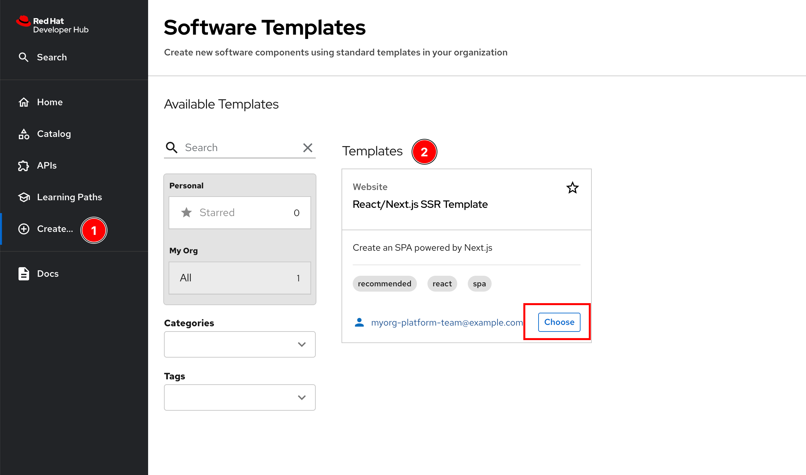
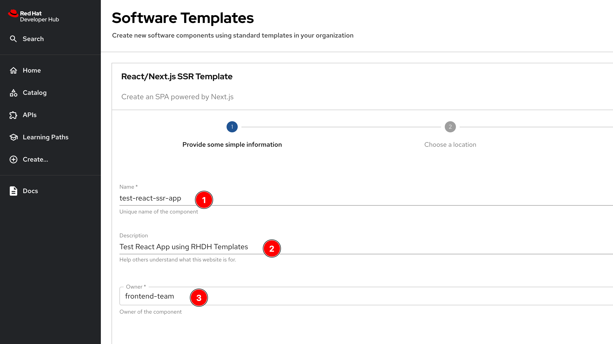
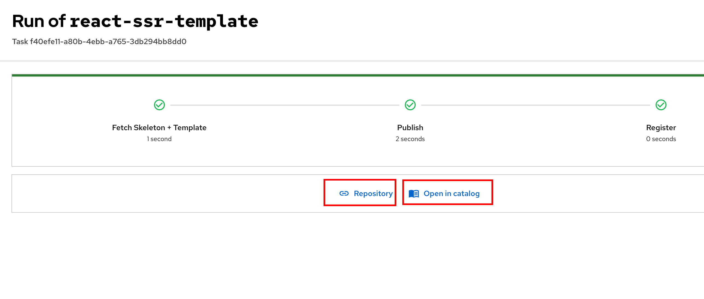
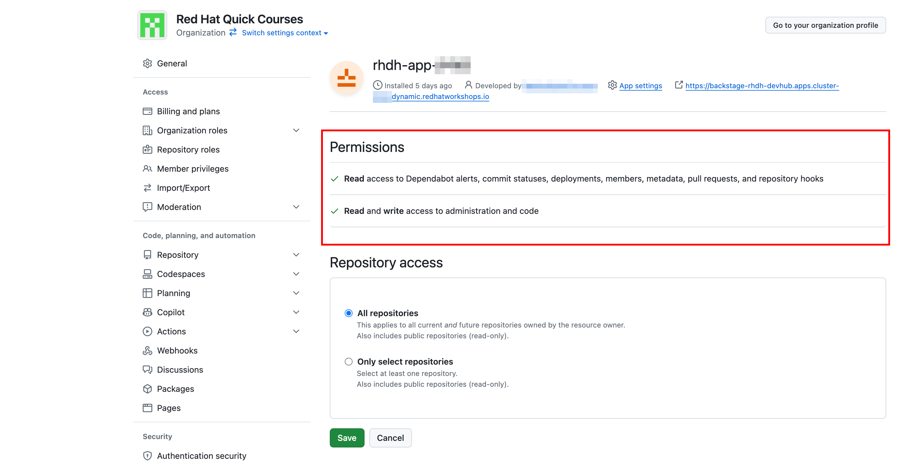
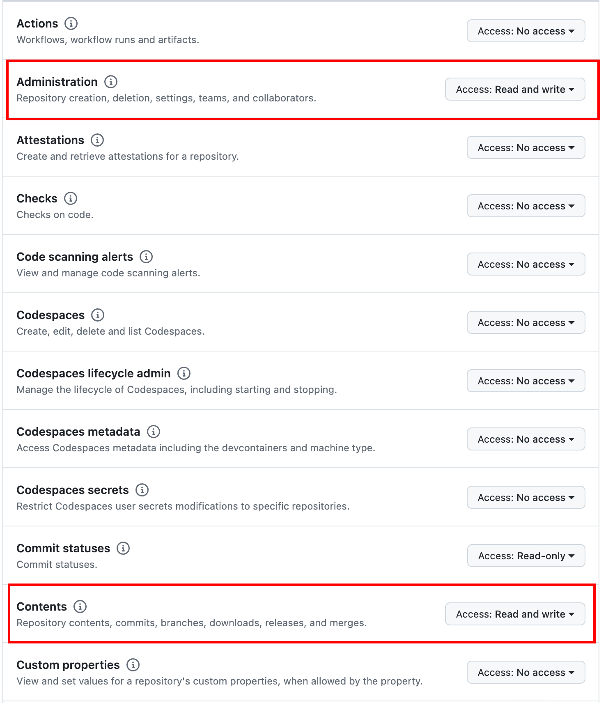
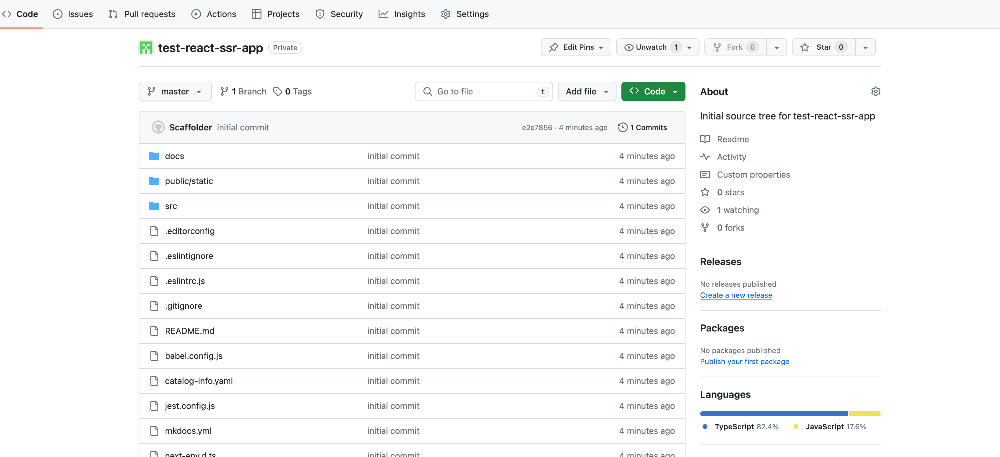

Software Templates
The first course in the learning path for RHDH introduced you to the general concept of a Software Template, also called Golden Path Template, or just Template.
This section briefly discusses the concepts and terminology about templates, and then walks you though a hands-on experience of creating software templates. You will also learn how to create applications from the template and auto-populate the generated application in the Catalog.
Concepts and Terminology
A Template is just another type of entity that can be imported into the Catalog. All aspects of creating, importing, auto-discovering, updating, and deleting templates are similar to the concepts and workflow outlined in the previous section on importing entities into the Catalog.
An RHDH Template is similar to templates that you use in programming languages, for example like Ruby on Rails rails new app, Java’s Maven archetypes, or Python’s cookiecutter to scaffold the general structure of a project or application. To create an RHDH Template, you need to supply a YAML file describing the template (usually called`template.yaml`), and a skeleton folder structure that contains the layout of a project or application with template variables (declared using Nunjucks template syntax ${{a_variable}}).
You can have any number of files and folders in the skeleton folder with any number of templated variables. The variables are then replaced with values provided by users in the RHDH front end. Once the skeleton is ready, it is published to a Git repository and then the catalog info YAML file is generated for the application instance and registered with RHDH.
The following are some of the most important concepts and terminology related to RHDH templates.
- Template metadata or Headers
-
Basic metadata and information about the template. You need to provide a unique name for the template, along with a title and description for the template that will be displayed in the front end web UI.
- Parameters
-
Inputs to your templates are declared in the parameters section. You need to describe the type (String, Numbers, Hidden, Boolean etc) of the parameter, if they are mandatory, and provide default values, if any. These are rendered as HTML forms in RHDH when you instantiate the template. Values provided by the users are then replaced in the template (in the
${{var}}variable placeholders). - Properties
-
Properties are the detailed specification for Parameters, along with other UI hints for RHDH. You can make RHDH look up entity details from the Catalog (as a drop-down, for example) instead of the user manually typing in the values in the form.
- Steps
-
Steps describe the detailed actions that RHDH should perform when instantiating the template to create applications. Each step is rendered as separate HTML forms in the RHDH web UI. This usually involves fetching all the template files and overriding the placeholder variables, and then publishing the generated code to Git, followed by generation and registration of the application in the Catalog.
- Built-in Actions
-
Steps rely on a number of built-in actions that perform some of the common tasks when instantiating the template. A complete list of actions is available at the https://RHDH_URL/create/actions. Replace RHDH_URL with the actual URL of your RHDH instance. This page displays all the available actions that you can reuse in your template, along with a detailed description of the inputs to the actions.
- Output
-
This section of the template is to provide the result of your template instantiation to the web UI. You typically display a message about the template actions and then print the URL of the Git repository and the link to the generated entities catalog details page.
A template is defined using YAML files and has the following general structure:
apiVersion: scaffolder.backstage.io/v1beta3
kind: Template (1)
# some metadata about the template itself
metadata: (2)
name: mytemplate
title: An example Template
description: An example template
...
# these are the steps which are rendered in the frontend with form input
parameters: (3)
- title: Input title
required:
- name
properties: (4)
name:
title: Name
type: string
description: Unique name of the component
ui:autofocus: true
ui:options:
rows: 5
owner:
title: Owner
type: string
description: Owner of the component
ui:field: OwnerPicker
ui:options:
catalogFilter:
kind: Group
- title: Choose a location
required:
- repoUrl
properties: (4)
...
# fetch templates, override placeholder variables, publish to Git repo.
# finally generate the catalog info YAML files
steps: (5)
- id: fetch-template
name: Fetch Template
action: fetch:template (6)
input:
url: ./skeleton #folder containing default folder structure
values:
name: ${{ parameters.name }}
owner: ${{ parameters.owner }}
- id: publish
name: Publish
action: publish:github (6)
input:
allowedHosts: ['github.com']
description: This is ${{ parameters.name }}
repoUrl: ${{ parameters.repoUrl }}
repoVisibility: public # default is private
- id: register
name: Register
action: catalog:register (6)
input:
repoContentsUrl: ${{ steps['publish'].output.repoContentsUrl }}
catalogInfoPath: '/catalog-info.yaml'
# some outputs which are saved along with the job for use in the frontend
output: (7)
links:
- title: Repository
url: ${{ steps['publish'].output.remoteUrl }}
- title: Open in catalog
icon: catalog
entityRef: ${{ steps['register'].output.entityRef }}| 1 | This YAML file describes a Template |
| 2 | Template metadata - name, title, description, owner etc |
| 3 | Template parameter list. Inputs to the template |
| 4 | Properties of parameter. UI hints, types and validation rules |
| 5 | A list of steps to be performed when processing the template |
| 6 | Built-in template actions. In this scenario, fetch template, publish repo and register catalog entity. Default visibility of created Git repository is private. You need to set repoVisibility to public for the scaffolder to create public repository |
| 7 | Output of template processing. A link to the generated entity catalog detail and the published Git repository URL |
Lab: Creating a Simple Software Template
In this lab, you will generate a small template to deploy a React frontend application that uses a skeleton generated by the Next.js framework for creating a React based application that uses Server Side Rendering (SSR).
Pre-requisites
-
A running RHDH instance with valid authentication set up correctly for GitHub authentication.
-
You will use catalog YAML files from the https://github.com/RedHatQuickCourses/devhub-qc-apps GitHub repository. You can either use this repository directly, or fork a copy under your own organization that you created for RHDH integration in the previous course. Note that for GitHub auto-discovery to work correctly, you need to set up integration with GitHub using OAuth2 Apps correctly as outlined in the previous course (
Developer Hub Administration).
Steps
-
Inspect the top level template YAML file at https://github.com/RedHatQuickCourses/devhub-qc-apps/blob/main/templates/react-ssr/template.yaml. The
skeletonfolder contains the template file and folder structure generated by Next.js with variable placeholders. -
Inspect the following files and observe the variable placeholder definitions:
-
https://github.com/RedHatQuickCourses/devhub-qc-apps/blob/main/templates/react-ssr/skeleton/catalog-info.yaml (The catalog definition for this application)
-
Inspect the template definition at https://github.com/RedHatQuickCourses/devhub-qc-apps/blob/main/templates/react-ssr/template.yaml. Inspect the
parameters,steps, andoutputsections in particular to understand the features provided by the template. -
Navigate to the RHDH home page and then click
Create… > Register Existing Component. Providehttps://github.com/RedHatQuickCourses/devhub-qc-apps/blob/main/templates/react-ssr/template.yamlas the value in theSelect URLfield. -
Click
Analyze. If the YAML is valid, you will be shown the results of the analysis. Otherwise, you will a descriptive error message. Fix the error in the YAML files, and proceed with the import.If you still have RBAC enabled without the proper policies to allow the current user to create new components, you will see an error in this step. Disable RBAC temporarily while you learn and explore the features of RHDH. You will need to restart the RHDH pod for the change to take effect. -
Review the results of the analysis, and then click
Import. -
Navigate to the
Catalogpage in RHDH and selectTemplatein theKinddrop-down to see your newly imported template displayed. -
To instantiate the template and create a new application, click
Createin the RHDH left sidebar navigation menu, and then clickChoosein theReact/Next.js SSR TemplatecardFigure 1. Select a template -
Based in your parameter definition, you will be shown an HTML form asking for inputs. Enter
test-react-ssr-appin theNamefield and enter a descriptive comment in theDescriptionfield. Selectfrontend-teamfrom theOwnerdrop-down field. ClickNextwhen done.Figure 2. Template Input - Simple Information -
For the
Choose a locationstep, theHostfield is disabled and the default value from the template is filled in. Enter the name of your GitHub Organization in theOwnerfield, andtest-react-ssr-appin theRepositoryfield (this value identifies the name of the GitHub repository). ClickReviewwhen done.Do NOT enter any RHDH group name of any other string in the Owner field in this step. Owner here corresponds to the GitHub Organization where the application instance source tree will be published. You must enter the same GitHub Organization name here that you used to create the GitHub OAuth App credentials in the Developer Hub Administration course. -
Review the information you entered, and then click
Create. RHDH will process the inputs and generate the scaffolded source code, and then publish it to GitHub, Finally, thetest-react-ssr-appwill be registered as aComponentin the Catalog.Figure 3. Template Processing CompleteIf you have not created your GitHub App with proper permissions, it is possible you may see some errors related to insufficient permissions and the template processing will fail. Ensure that you provide the appropriate read and write access to the Organization and Repositories to prevent these types of errors. For example, a sample permission list looks like: Figure 4. GitHub Application PermissionsFigure 5. GitHub Repository Level Permissions Detail -
Click on the
Repositorylink, and verify that a new GitHub repository is created. Note how the placeholder variables in the skeleton folder of the template have been replaced with the input values from the RHDH frontend forms.Figure 6. New Application GitHub Repository -
Click the
Cataloglink the output card in the left sidebar to view the details of the imported component entity. You can also view the new catalog item by clicking onCatalogin the RHDH left sidebar navigation menu. -
Optional clean up. Do the following in sequence:
-
Delete the
test-react-ssr-appGitHub repository -
Delete the
test-react-ssr-appof typeComponentin the Catalog -
Finally, delete the
react-ssr-templatetemplate
-